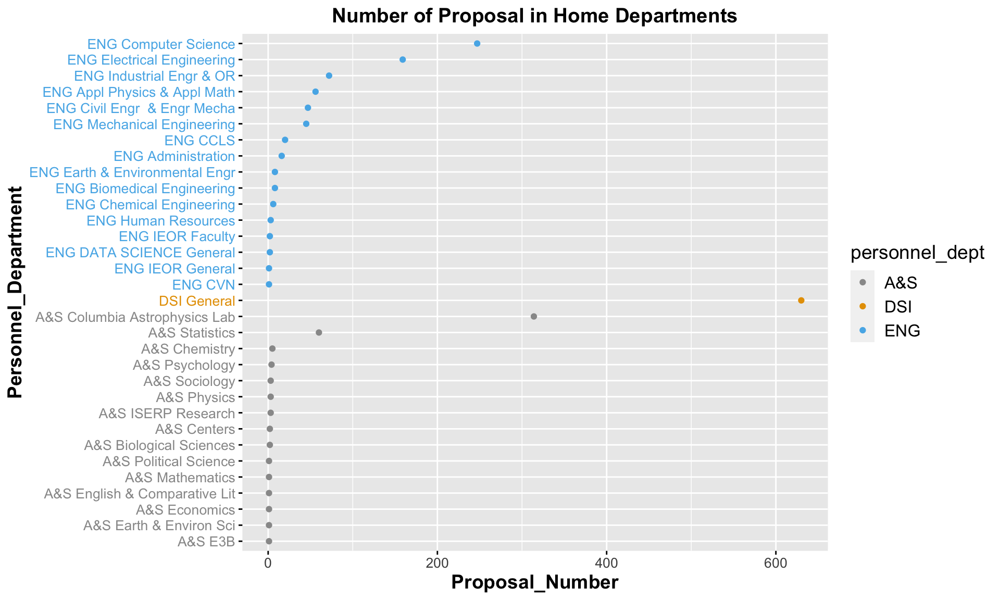
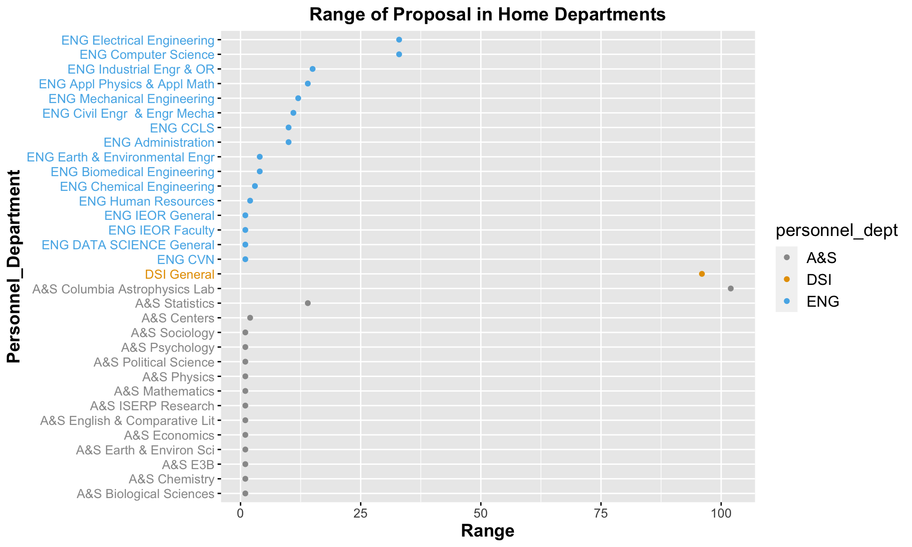
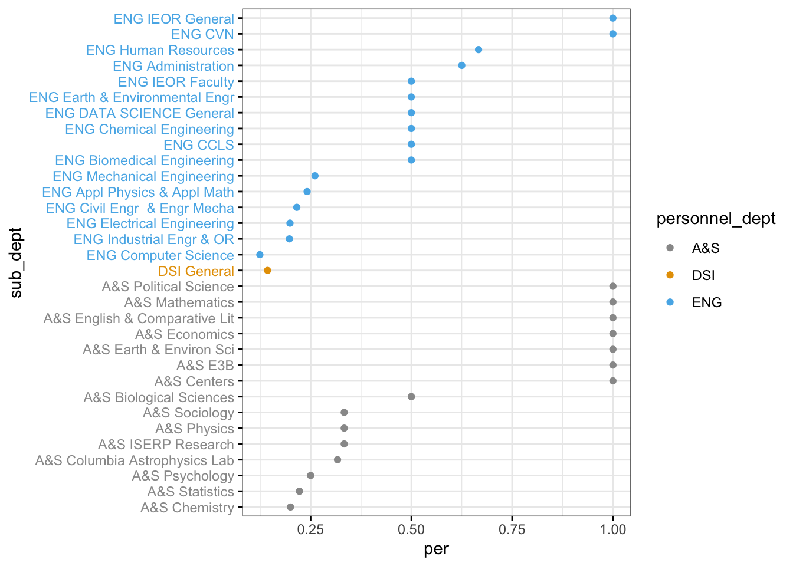

Chapter 4 Personnel Home Departments
In this chapter, I will dive deeper into the Personnel Home Departments to see their relations with proposals.
4.1 Sum of Proposals
As can be seen from the cleveland dot plot of sum proposals of home schools, the majority of proposals are participated by DSI, ENG and A&S department. To see which departments contributes most to the number of proposals, I used another cleveland dot plot with the detailed information of departments of DSI, ENG and A&S.
 From the above plot, it is that DSI school has only one department, which is DSI General. In ENG department, ENG Computer Science and ENG Electrical Engineering contributes most to number of proposals. In A&S department, A&S Columbia Astropysics Lab, and A&S Statistics contributes most to the number of proposals.
4.2 Range of Proposals
For the schools with large variations of number of proposals, we need to know which departments contributes most to the variations. Therefore, a more detailed cleveland dot plot is drawn.

The top two departments that contribute most to the variation in ENG are ENG Electrical Engineering and ENG Computer Science. The top two in A&S are A&S Columbia Astropysics Lab, and A&S Statistics. It’s clear that the variations have a very strong positive connection with the number of proposals. Therefore, I used another cleveland dot plot to show the normalized variance, which is equal to the range of proposals over years divided by the sum of proposals in that school.

As can be seen from the plot, in ENG department, ENG IEOR General and ENG CVN have the highest percentage of variance. In A&S, A&P Political Science, A&S Mathematics, A&S English & Comparative Lit, A&S Economics, A&S Earth & Environ Sci, A&S E3B and A&S Centers have the highest percentage of variance, and the percentages all reaches 100%. Surprisingly, ENG Computer Science, ENG Electrical Engineering, DSI General, A&S Columbia Astrophysics Lab and A&S Statistics, which have very large number of variation in proposals, get relatively low variance in percentage. This may be because the sub-departments with very small number of proposals may vary from 0 proposal in some year to more than one proposals in some other year, then the percentage of variance will be 100%. Comparatively, the sub-departments with large number of proposals are stable in some degree.
4.3 Proposals per Year
To see the specific variation over years, I used d3 to show an interactive bar chart of the variation of number of proposals with the five departments that varies most over years.
From the above interactive chart, the following trend shows up:
The overall trend of proposals in home departments is increasing, while in 2020, there was a sudden decrease, maybe due to COVID-19;
DSI General had huge increases in 2015 and 2017 and it rank first in every year;
A&S Astrophysics Lab had a sudden increase in 2018, and a sudden decrease in 2020.